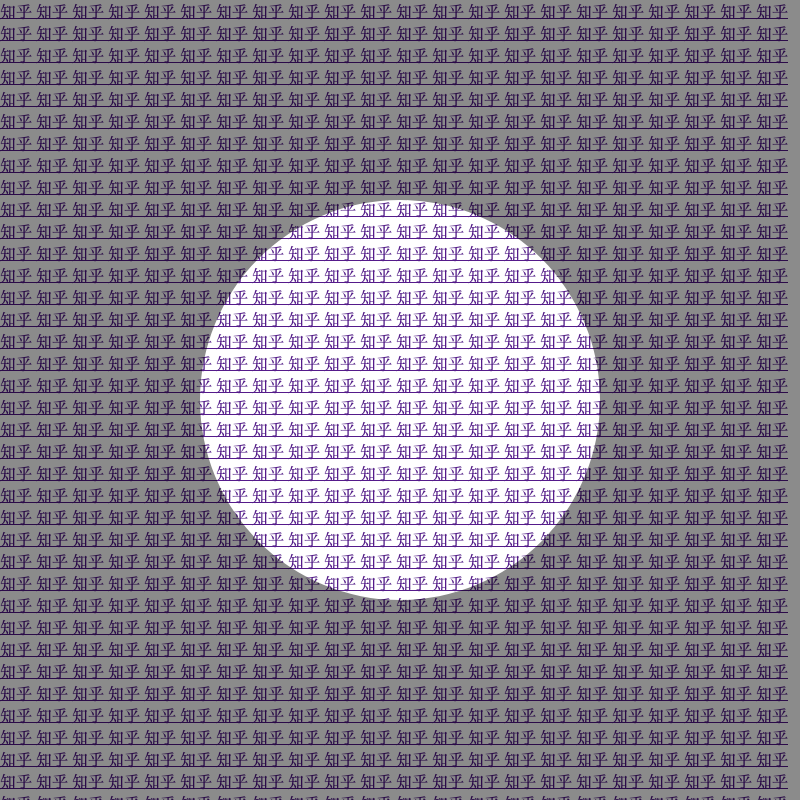

css 实现圆内 a 标签可以点击, 圆外标签不可点击
思路: 在区域上覆盖一个 div, div 挖空一个圆, 方法:
- 使用 clip-path. 挖空一个圆, 点击可以穿透
- 使用 mask. 挖空一个圆, 但是点击不可以穿透

1
2
3
4
5
6
7
8
9
10
11
12
13
14
15
16
17
18
19
20
21
22
23
24
25
26
27
28
29
30
31
32
33
34
35
36
37
38
39
40
41
42
43
44
45
46
47
48
| <!DOCTYPE html>
<html lang="en">
<head>
<meta charset="UTF-8">
<meta name="viewport" content="width=device-width, initial-scale=1.0">
<title>css 实现圆内 a 标签可以点击, 圆外标签不可点击</title>
</head>
<body>
<style>
.content{
width: 800px;
height: 800px;
overflow: hidden;
position: relative;
}
.mark{
width: 800px;
height: 800px;
position: absolute;
top: 0px;
left: 0px;
opacity: 0.5;
background-color: black;
-webkit-clip-path: url(#clip);
clip-path: url(#clip);
}
</style>
<svg height="0" width="0" class="svg-clip" style="position:absolute">
<defs>
<clipPath id="clip" clipPathUnits="objectBoundingBox">
<path d="M0,0 L1,0 1,1 0,1 0,0M.75,.5A.25,.25 0 1 0 .25,.5A.25,.25 0 1 0 .75,.5z" />
</clipPath>
</defs>
</svg>
<div class="content">
<div class="mark"></div>
</div>
<script>
let content = document.querySelector('.content')
for (let index = 0; index < 1000; index++) {
var a = document.createElement("a");
a.innerHTML = '知乎 '
a.href = 'https://www.zhihu.com/follow'
content.append(a)
}
</script>
</body>
</html>
|
mask 挖圆
1
2
| -webkit-mask:radial-gradient(circle 40px,transparent 98%,#fff 100%);
mask:radial-gradient(circle 40px,transparent 98%,#fff 100%);
|
clip-path 挖圆
1
2
3
4
5
6
7
| <svg height="0" width="0" class="svg-clip" style="position:absolute">
<defs>
<clipPath id="clip" clipPathUnits="objectBoundingBox">
<path d="M0,0 L1,0 1,1 0,1 0,0M.75,.5A.25,.25 0 1 0 .25,.5A.25,.25 0 1 0 .75,.5z" />
</clipPath>
</defs>
</svg>
|
1
2
| -webkit-clip-path: url(#clip);
clip-path: url(#clip);
|
在线 clip-path
在线 clip-path
https://stackoverflow.com/questions/62115948/how-to-clip-a-circle-inside-a-shape/62116405#62116405